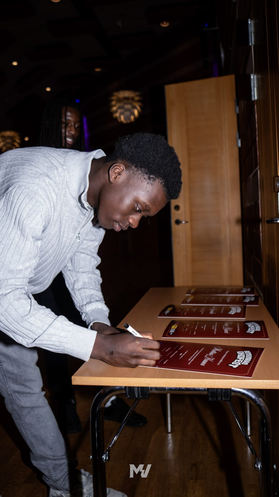

Läs
Digital version
Årets antologi kommer att finnas att läsa digitalt här på hemsidan.
Håll utkik under NyheterVinnartexterna publiceras i en gemensam antologi – ett bestående minne av årets unga röster.
Varje år samlas vinnartexterna från skrivtävlingen i en antologi. För eleverna är det ofta första gången de ser sina egna ord i tryck – ett kvitto på att deras berättelser räknas.
Antologin tas fram i samarbete med Bokusgruppen.

Årets antologi kommer att finnas att läsa digitalt här på hemsidan.
Håll utkik under NyheterTidigare års antologier publiceras på den här sidan allt eftersom – ett växande bibliotek av unga Botkyrkaröster.
Fråga oss om tidigare utgåvorAntologin blir verklighet genom vårt samarbete med Bokusgruppen.
Om våra samarbeten